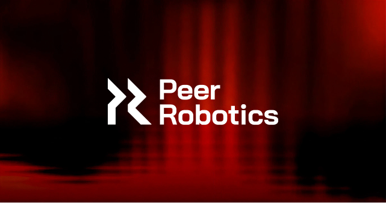
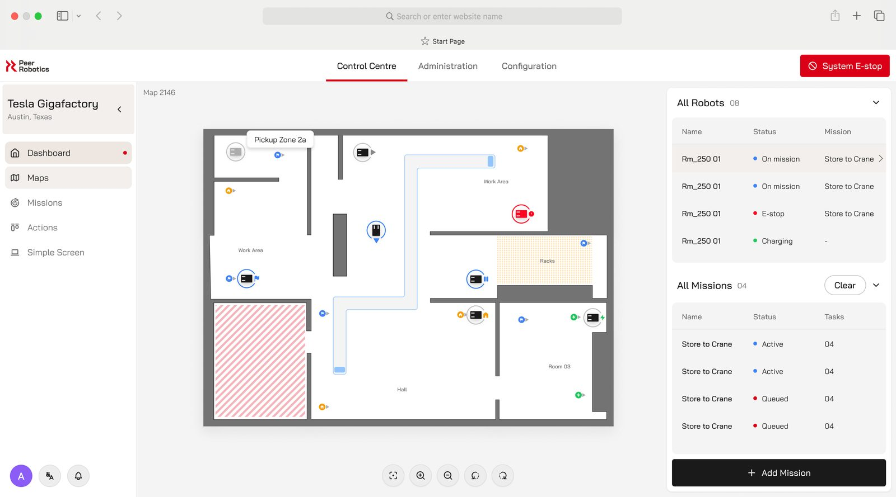
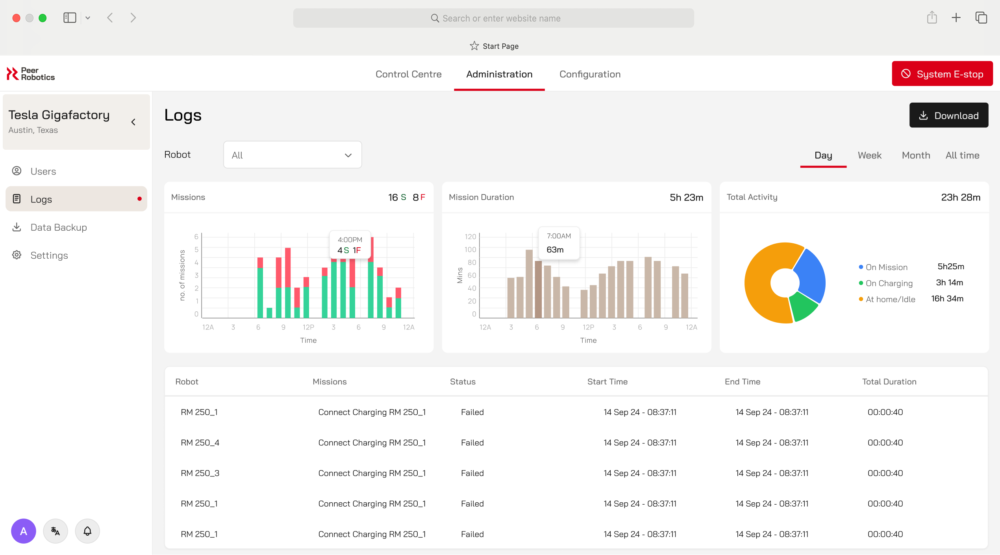

Human-in-the-loop automation, dashboard architecture, mission planning workflows

And a deployment a shop-floor operator can run without a technical background.
Peer Robotics automates material movement across manufacturing floors. Their solutions handle pallet, trolley, and bin movement with zero infrastructure changes—working with your existing assets. Whether it's autonomous pallet transport, trolley tugging, or closed-loop bin delivery, their platform adapts to your workflow without disruption.
The difference: human-in-the-loop learning. Operators teach robots through real-time guidance, not programming. Robots improve with every mission, and humans always retain control. Shop-floor teams deploy solutions in weeks, not months, without specialized robotics expertise.
Their product portfolio spans two series: RM (Robotic Material Handlers) and PR (Peer Robotics Autonomous Systems). The RM series focuses on pallet movement solutions for standardized workflows, while the PR series covers trolley movement, trolley tugging for train operations, and bin movement for kit-to-line delivery. Each solution is purpose-built for specific manufacturing scenarios, yet unified by the same human-robot collaboration platform.
Operators and fleet managers were each working in their own view. Peer Robotics came to us for a single control platform that could hold all of it.

Initially, the request focused on building a "control dashboard" — a centralized view of robot status, missions, and real-time operations. But deeper discovery revealed the real problem wasn't about displaying data — it was about bridging the gap between human operators and autonomous systems in a way that felt natural, trustworthy, and learnable.
Operators needed to: Understand robot behavior without being engineers, intervene quickly when things went wrong, teach robots new behaviors through demonstration, coordinate missions across multiple robots and facilities, and maintain visibility into what the robot "learned" and why.
The mandate shifted from "build a control dashboard" to "create a platform that makes human-robot collaboration intuitive, transparent, and learnable for non-technical operators."
We restructured the platform around three core operator needs:
1. Mission Planning — Operators define missions using simple spatial and task language instead of programming paths. The robot learns the route, understands the context, and executes while remaining responsive to real-time corrections.
2. Mapping & Navigation — Robots don't inherit facility knowledge. Our Mapping module allows operators to create floor plans, define zones, and tag locations in human-readable language. The robot learns the facility's workflow — where humans work, where congestion happens, which routes are preferred.
3. Control Centre — Autonomous systems fail silently. Our Control Centre makes robot state, decision-making, and learning visible without overwhelming the user. Instead of raw sensor data, operators see clear status indicators, active mission tracking, and E-Stop functionality that's always within reach.
Getting to the Control Centre took several passes. Early concepts leaned on a persona switcher, letting fleet managers and floor operators see different information densities from the same map. Later versions tested folding the E-Stop and mission detail into a single side panel instead of a separate modal, so operators never lost sight of the live floor plan while resolving an issue. Each iteration was tested against the same question: can an operator tell what's wrong and act on it in under five seconds?
The Dashboard serves as the operator's first touchpoint — a unified view across all robots, facilities, and missions. We structured it to answer critical questions in priority order: How many robots are active? What are they doing? Is anything broken? What do I need to do next?
Rather than overwhelming operators with metrics, we show the minimum viable information needed for quick decision-making, with progressive disclosure for deeper exploration.

Operators and managers need visibility into what robots learned, where issues occurred, and how to improve. Our Logs interface surfaces critical information without overwhelming users.
Mission History — Every mission executed with start/end times, success/failure reasons, and duration. Operators see at a glance which missions succeeded, which failed, and why. This historical record becomes the foundation for continuous improvement.
Robot Activity Tracking — Battery usage, uptime, average mission duration, and facility-specific performance. Managers understand fleet utilization: robots on mission vs. charging vs. idle. The dashboard shows mission success rates by robot type and mission category.
Learning Events — When operators corrected robot behavior, the system logs these moments. Rather than hiding corrections as failures, we surface them as learning opportunities. Over time, operators see how robots improve from their guidance.
Failure Analysis — Why missions failed, what triggered E-Stop events, and which operations need operator intervention most often. Instead of black-box errors, every failure is traceable and actionable.
Analytics Dashboards — Fleet utilization trends, mission success rates by robot and type, operator efficiency metrics, and facility throughput over time. These insights drive optimization: which missions take longest, which routes are preferred, which robots perform best under specific conditions.

Transparency beats abstraction. In human-robot systems, operators need to understand what the robot is doing and why. Black-box automation creates distrust. Simple, clear state information builds confidence.
Leverage operator language. Shop-floor operators don't think in coordinates or sensor data. They think in locations, tasks, and outcomes. When we aligned the interface with their mental model, adoption accelerated.
Make learning explicit. Autonomous systems improve through experience. By explicitly showing operators what the robot learned from each mission, we turned robots from mysterious machines into understandable partners.
Control should be omnipresent. In manufacturing, things go wrong. The E-Stop and emergency actions must always be visible and immediately accessible.
Context matters more than features. Rather than building every possible feature, we focused on the specific context: manufacturing operators, multi-robot fleets, human-robot collaboration. This constraint drove better design.